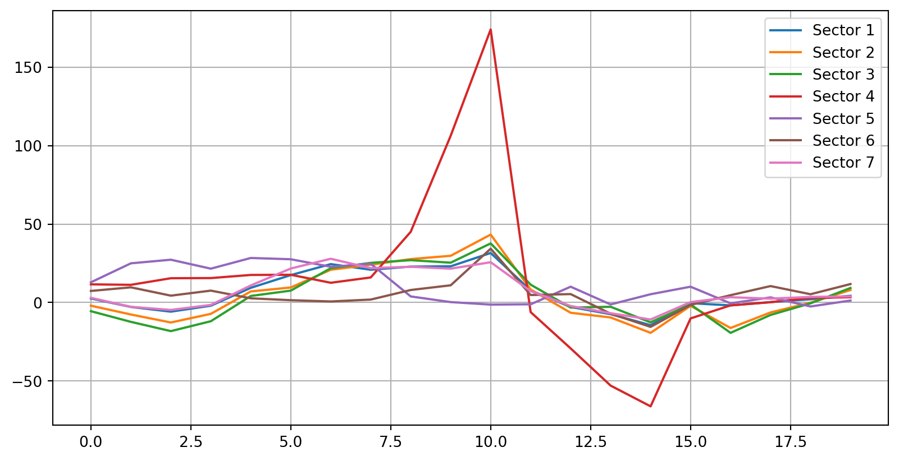
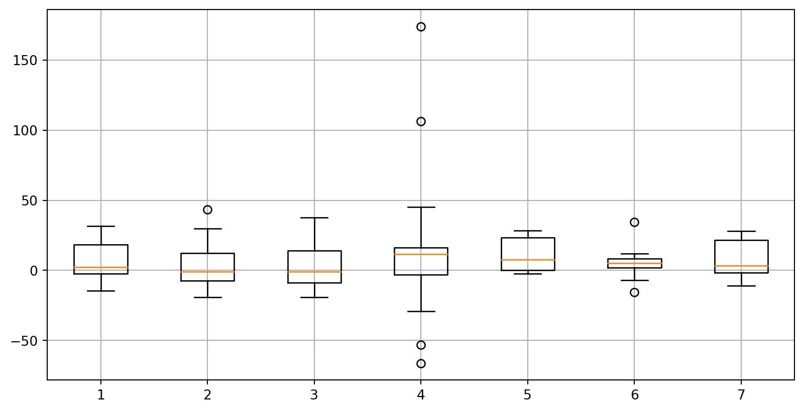
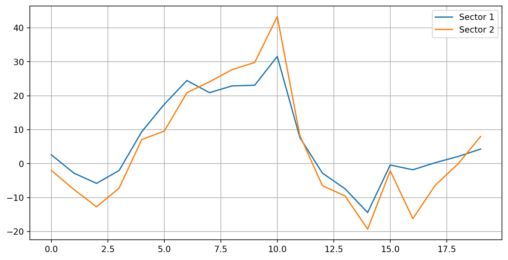

import numpy as np # giving numpy a shorter "nickname"
import timeIntroduction to Numpy & Matplotlib
Recap from yesterday
Introduction to Visual Studio
Introduction to Python
Handling Lists
Handling Loops and Conditionals
Overview for today
Introduction to Jupyter Notebook
Python libraries: Extending Python’s functionality
NumPy for more efficient numerical computing
Matplotlib: Data visualization
Section 1: Jupyter Notebook
Refresher: .py and .ipynb
If it’s a .py file…

For “production” uses e.g., creating apps, industrial deployments; Executing the file will run all the codes inside the file.
If it’s a .ipynb file…

Great for quick experiments or teaching / presentation; Codes will be executed on per-block basis
Section 2: Numpy Arrays
What’s Numpy?
NumPy is the fundamental package for scientific computing in Python.
It is a Python library that provides a multidimensional array object, various derived objects (such as masked arrays and matrices), and an assortment of routines for fast operations on arrays, including mathematical, logical, shape manipulation, sorting, selecting, I/O, discrete Fourier transforms, basic linear algebra, basic statistical operations, random simulation and much more.1
Faster and more memory-efficient than Python lists
Optimized for large-scale numerical operations (better than list)
What’s a Python library?
- Python libraries or packages are essentially reusable sets of code that can be imported into your environment to extend functionality.
- Before using them, most libraries must first be installed and then imported.
- However, some libraries are part of the Python Standard Library, meaning they don’t need to be installed—just imported. For example,
time.
Numpy vs Lists
Lists
- dynamic size upon creation; you can change the size of a list anytime.
- all items inside list can be of different data types.
- not optimized for scientific/mathematical operations
NumPy Arrays
- fixed size upon creation; changing the size will create new array and delete the original.
- all items inside arrays must be the same data types.
- facilitate advanced mathematical and other types of operations on large numbers of data, and thus more efficient.
- a lot scientific/mathematical libraries are build on top of numpy (including pandas!)
Numpy vs Lists: Performance comparison
Imagine we have a million numbers to square. We’ll store them in both a list and an array, then compare their processing speeds.
# Creating large datasets
list_data = list(range(1000000))
numpy_data = np.arange(1000000)
# Comparing operation speed
start = time.time()
list_result = [x**2 for x in list_data]
list_time = time.time() - start
start = time.time()
numpy_result = numpy_data**2
numpy_time = time.time() - start
print(f"List took {list_time:.4f} seconds to finish the operation.")
print(f"NumPy took {numpy_time:.4f} seconds to finish the operation.")List took 0.1455 seconds to finish the operation.
NumPy took 0.0026 seconds to finish the operation.Numpy vs Lists: Sum and products
- When you add two lists together, the contents will be concatenated
- When you do add two arrays together, the contents will be summed
Lists
list_1 = [1, 2, 3, 4, 5]
list_2 = [10, 20, 30, 40, 50]
print(list_1 + list_2)
# list_1 * list_2 will give an error[1, 2, 3, 4, 5, 10, 20, 30, 40, 50]Numpy Arrays
array_1 = np.array([1, 2, 3, 4, 5])
array_2 = np.array([10, 20, 30, 40, 50])
print("Sum:", array_1 + array_2)
print("Product:", array_1 * array_2)Sum: [11 22 33 44 55]
Product: [ 10 40 90 160 250]Numpy creation and operations
As seen in the example, we can use np.arange() to create an array from scratch. We can also create an array from a list using np.array() like this: np.array([1, 2, 3, 4, 5])
Most operations we perform on lists can also be done with arrays, including:
- Slicing
- Indexing
- Sorting
- Creating copies or views (with important differences between them!)
Let’s try these!
Learning Check #1
Create two arrays called odd_numbers and even_numbers that only contains odd numbers and even numbers from 1 to 20 respectively.
Code
odd_numbers = np.arange(1, 21, 2)
even_numbers = np.arange(0, 21, 2)
print("Odd numbers:", odd_numbers)
print("Even numbers:", even_numbers)Odd numbers: [ 1 3 5 7 9 11 13 15 17 19]
Even numbers: [ 0 2 4 6 8 10 12 14 16 18 20]Section 3: 2-dimensional Arrays
Array can contain columns and rows too!
array_2d = np.array([[1, 2, 3], [4, 5, 6], [7, 8, 9]])
print(array_2d)
print("Shape of the array:", array_2d.shape)
print("Size of the array:", array_2d.size)[[1 2 3]
[4 5 6]
[7 8 9]]
Shape of the array: (3, 3)
Size of the array: 9Indices in a 2D array

Loading from a CSV into a 2D array
Let’s load our data sg-gdp.csv into a 2D array!
In this CSV:
- The rows represent 7 different sectors
- The columns represent the quarters from 2023 Q4, dating back all the way to 2019 Q1.
- Each cell contains the GDP growth of that sector for that quarter, compared to previous year’s quarters.
gdp_data = np.loadtxt('data/sg-gdp.csv', delimiter=',', dtype="float16")
np.set_printoptions(suppress=True)
print("GDP data")
print(gdp_data)
print("GDP data shape:", gdp_data.shape)GDP data
[[ 2.6 -2.8 -5.8 -2. 9.4 17.5 24.5 20.9 22.9 23.1 31.6 7.7
-2.8 -7.4 -14.4 -0.4 -1.8 0.3 2.1 4.3]
[ -2. -7.6 -12.7 -7.2 7.1 9.6 20.9 24.1 27.7 29.8 43.3 8.3
-6.5 -9.5 -19.3 -2.1 -16.2 -6.3 -0.1 8. ]
[ -5.5 -12.3 -18.2 -11.9 4.2 7.6 21.9 25.3 27. 25.4 37.7 11.4
-3.2 -2.7 -12.6 -1.2 -19.3 -7.9 -0.5 9.3]
[ 11.6 11.3 15.5 15.6 17.6 17.7 12.6 16. 45.1 106.3 174. -6.1
-29.2 -52.9 -66.1 -10.1 -1.8 0.2 3. 3.4]
[ 12.9 25. 27.3 21.6 28.4 27.6 22.8 24.7 3.9 0.3 -1.3 -1.1
10.1 -1.2 5.3 10.1 -0.5 3.3 -2.5 1.3]
[ 7.4 9.7 4.4 7.6 2.7 1.5 0.7 1.9 8. 11. 34.3 4.8
5.4 -7.1 -15.5 -1.5 4.7 10.5 5.3 11.8]
[ 3. -2.7 -4.7 -1.5 10.9 21.7 27.9 21.9 22.8 21.6 25.7 7.3
-2.2 -6.8 -10.8 0.3 3.4 2.5 3.6 3.9]]
GDP data shape: (7, 20)Remember, the shape will be printed as (row, column).
2D array operations
Let’s see if we can complete the following tasks:
- Find out the mean, standard deviation, max, and mean values.
- Find the mean for each quarter (column-wise operation)
- Find the mean for each sector (row-wise operation)
- Transpose the array
- Retrieve all the negative values.
- Calculate the changes every quarter for Sector 1.
Axis Operations

Numpy Financial
The numpy-financial package is a collection of elementary financial functions. It’s a relatively tiny package, but useful if you need to do some financial calculations.

Let’s try some of these!
Learning Check #2
The gdp_data is longitudinal, with each row representing observations for a specific sector over time. This makes growth and contraction trends meaningful to analyze. To calculate changes in the data using NumPy, we can use the numpy.diff() function, which computes the differences between successive values in an array.
- Calculate the changes for each quarter for all sector. Save this into an array called
sector_changes. - Afterwards, find the largest changes in
sector_changes.
Code
sector_changes = np.diff(gdp_data)
print("sector_changes:", sector_changes)
print("\nsector_changes shape:", sector_changes.shape)
print("\nLargest change:", np.amax(sector_changes))sector_changes: [[ -5.4 -3. 3.8 11.4 8.1 7.
-3.594 2. 0.1875 8.5 -23.89 -10.5
-4.598 -7. 14. -1.4 2.1 1.8
2.201 ]
[ -5.6 -5.1 5.504 14.3 2.5 11.305
3.188 3.61 2.094 13.516 -35. -14.8
-3. -9.8 17.2 -14.1 9.91 6.2
8.1 ]
[ -6.797 -5.906 6.305 16.1 3.402 14.305
3.39 1.703 -1.594 12.28 -26.28 -14.59
0.5 -9.91 11.4 -18.1 11.4 7.4
9.8 ]
[ -0.3047 4.203 0.10156 1.992 0.1094 -5.1
3.398 29.1 61.22 67.7 -180.1 -23.1
-23.7 -13.22 56.03 8.305 2. 2.8
0.4004 ]
[ 12.1 2.297 -5.703 6.812 -0.8125 -4.797
1.906 -20.8 -3.6 -1.6 0.2002 11.2
-11.305 6.5 4.8 -10.6 3.8 -5.8
3.8 ]
[ 2.305 -5.305 3.203 -4.902 -1.199 -0.8
1.2 6.1 3. 23.31 -29.52 0.5977
-12.5 -8.4 14. 6.2 5.8 -5.2
6.496 ]
[ -5.7 -2. 3.2 12.4 10.805 6.203
-6. 0.8906 -1.203 4.11 -18.4 -9.5
-4.6 -3.996 11.09 3.1 -0.9004 1.1
0.3008 ]]
sector_changes shape: (7, 19)
Largest change: 67.7Section 4: Visualizing Array contents
Visualization libraries: Matplotlib and Seaborn
There are multiple visualization libraries for python. We will try out Matplotlib and Seaborn (for next session)
Primary differences between the two:
Matplotlib
- A foundational Python library for static, interactive, and animated visualizations.
- Highly customizable, offering full control over plot elements (axes, ticks, legends).
- Supports a wide range of plots, from simple line charts to complex 3D visualizations and heatmaps.
- Can be challenging for beginners due to its flexibility.
- Ideal for precise control and building complex plots.
Seaborn
- Built on Matplotlib to simplify statistical visualization with attractive designs.
- Offers high-level abstractions for complex plots (e.g., pair plots, heatmaps) with minimal effort.
- Supports visualizing variable relationships and statistical summaries (e.g., regression, categorical plots).
- Easier for beginners to create high-quality visuals quickly.
- Best for data exploration and statistical analysis with minimal setup.
Chart types and their purposes
- Bar charts: Comparing categories
- Line charts: Trends or progress over time
- Scatter plots: Relationships between (continuous) variables
- Pie charts: Parts of a whole
- Depending on who you ask, some may argue that percent barchart is better at this.
- Box plots: Distribution and outliers
Anatomy of a matplotlib graph

Useful resources:
- Matplotlib cheatsheets - This is more beginner-friendly
- Quick start guide
- Python Graph Gallery
Matplotlib: Simple Lineplot
Let’s try to visualize the contents of gdp_data!

Matplotlib: Individual Line Plots
Let’s create different lines for each sector!

Matplotlib: Histogram
Let’s see if there’s any outlier growths or contractions on each sectors over the quarters!

Learning Check #3
Using the sg-gdp.csv data loaded into a NumPy array:
- Create a line plot showing the GDP growth over time for the first two sectors only
- Add appropriate labels, a title, and a legend to the plot.
Code
two_sectors = gdp_data[:2, :] #[first two rows, all columns]
sector_number = 1
for sector in two_sectors:
plt.plot(sector, label = "Sector " + str(sector_number))
sector_number = sector_number + 1 #increase sector number by 1
plt.legend()
plt.grid()
plt.show()
End of Session 2!
We have covered: jupyter notebook, numpy, and matplotlib!